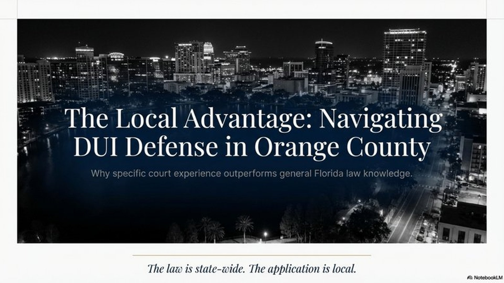
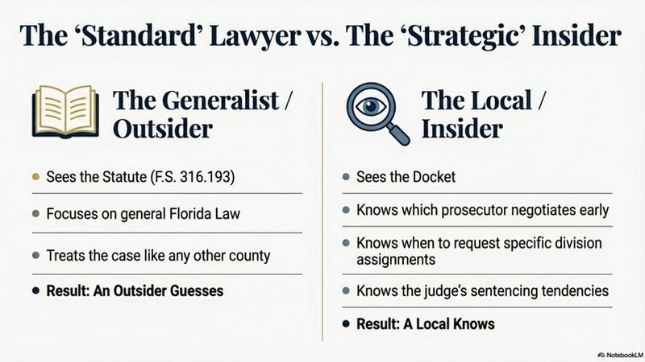

Orlando DUI Lawyer: Why Local Experience Matters

You've been arrested for DUI in Orlando. The officer took you to the Orange County Jail. Your case will be heard at the Orange County Courthouse on Division Avenue. But the lawyer you're considering practices mostly in Tampa, or takes DUI cases "throughout Central Florida." Does it matter? Yes—and here's why.
What "Local Experience" Actually Means
When defense attorneys talk about "local experience," we're not just talking about knowing where the courthouse is. We're talking about relationships, reputation, and institutional knowledge that only comes from working in the same building, with the same judges and prosecutors, day after day.
Orange County DUI Courts
DUI cases in Orange County are primarily handled at:
- Orange County Courthouse - 425 N Orange Ave, Orlando
- Criminal Division - Multiple courtrooms assigned to DUI and criminal traffic cases
- Traffic Court - Administrative license suspension hearings
A local Orlando DUI lawyer practices in these courts regularly. That means:
- Knowing the judges - Their sentencing tendencies, what arguments they find persuasive, which motions they're likely to grant
- Knowing the prosecutors - Who's willing to negotiate, who takes every case to trial, what evidence they find convincing
- Knowing the system - How long cases typically take, which filing procedures work best, which courtroom staff can help
- Knowing the outcomes - What a "good deal" looks like on a first DUI vs. a second DUI with property damage

Florida DUI Law: The Foundation
Every DUI case in Florida is charged under F.S. 316.193. The statute makes it illegal to drive or be in actual physical control of a vehicle while:
- Having a blood alcohol level of 0.08% or higher, or
- Under the influence of alcohol or drugs to the extent your normal faculties are impaired
The penalties escalate based on prior convictions and aggravating factors:
Florida DUI Penalties
- First DUI: Up to 6 months jail, $500-$1,000 fine, license suspension 180 days to 1 year
- Second DUI: Up to 9 months jail (within 5 years requires 10-day minimum), $1,000-$2,000 fine, 5-year license revocation
- Third DUI (within 10 years): Third-degree felony, up to 5 years prison, minimum 30 days jail
- Fourth DUI or higher: Third-degree felony regardless of time between offenses
These are the statutory penalties. What you actually face depends on your case specifics, your criminal history, and—critically—the norms in the county where you're charged.
And nowhere is this distinction more important than in Orange County.
Why Orange County DUI Cases Are Different
Florida is a big state with 67 counties. Each State Attorney's office has its own culture, policies, and approach to DUI cases. Orange County—home to Orlando, the theme parks, and a massive tourism industry—handles DUI cases very differently than rural counties or even nearby Seminole or Osceola.
High Volume, High Stakes
Orange County sees thousands of DUI arrests every year. The sheer volume means prosecutors are overworked and judges manage packed dockets. A local attorney knows:
- Which prosecutors have discretion to negotiate early
- When to request a case to be assigned to a specific division
- How to use pretrial motions strategically to slow down a case (and create leverage)
- What "standard offers" look like and when to push for better
Specialized DUI Prosecutors
The State Attorney's Office in Orange County has prosecutors who focus specifically on DUI cases. They know the science of breath tests, the law on traffic stops, and how to cross-examine defense experts. Your attorney needs to match that expertise—and local experience is part of that.
Tourism and Enforcement
Orlando's tourism industry means increased DUI enforcement around theme parks, International Drive, and downtown entertainment districts. Officers in these areas are trained specifically for DUI detection, and their reports are often more detailed. A local lawyer recognizes these patterns and knows how to challenge them.
Why My Background Matters
I spent years as a State Trooper and Deputy Sheriff before becoming a defense attorney. That experience gives me insight into how DUI arrests are made, how evidence is collected, and where mistakes happen.
But it's the combination of law enforcement background and local court experience that makes the difference:
- I know what officers are trained to do - And I know when they deviate from proper procedure
- I know what evidence prosecutors need - And I know what's missing from their case
- I know what judges expect - And I know how to present motions and arguments they'll respect
This isn't about tricks or gimmicks. It's about credibility. When you walk into an Orange County courtroom with an attorney who practiced there for years, who knows the people in the room, and who has a track record—the State takes you more seriously.
What This Means for Your Case
Here's what local experience actually looks like in practice:
Realistic Case Assessment
A local attorney can tell you, "In Orange County, with this judge, with a 0.12 breath test and no accident, here's what typically happens." That's not a guarantee—it's context. And context matters when you're deciding whether to take a plea deal or go to trial.
Strategic Negotiation
Some prosecutors in Orange County will reduce a DUI to reckless driving if the stop was weak. Others won't. A local lawyer knows who will negotiate and what evidence moves them. That knowledge saves time and gets better outcomes.
Motion Practice That Works
Filing a motion to suppress evidence isn't enough. You need to know which judges grant them, what legal standards they apply, and how to present the facts persuasively. Local attorneys have that track record.
Example: Field Sobriety Tests
One common challenge in Orange County DUI cases is officer training on field sobriety tests (FSTs). If the officer administering your FSTs wasn't properly certified or didn't follow NHTSA protocols, that evidence can be challenged. A local attorney knows which officers have training issues and how to expose those problems in court.
Common Defenses in Orange County DUI Cases
Every DUI case is different, but local attorneys see patterns. In Orange County, we frequently challenge:
- Illegal traffic stops - Did the officer have reasonable suspicion to pull you over?
- Field sobriety test administration - Were the tests done correctly? Were you given proper instructions?
- Breath test accuracy - Was the Intoxilyzer 8000 properly maintained? Was the 20-minute observation period followed?
- Rising blood alcohol - Were you under 0.08% when you were actually driving, but over the limit by the time you were tested?
- Medical conditions - Do you have a medical condition (diabetes, GERD, etc.) that could affect test results?
These defenses require evidence, expert testimony, and experience. A local DUI lawyer has built relationships with experts who testify regularly in Orange County, knows which judges find these defenses credible, and understands how to present them effectively.
The Bottom Line: Location Matters
You wouldn't hire a divorce lawyer from Miami to handle your case in Orlando. You wouldn't hire a Tampa real estate attorney to close on a property in Orange County. The same principle applies to DUI defense.
DUI cases are local. The judges are local. The prosecutors are local. The outcomes depend on relationships, reputation, and institutional knowledge that only comes from being there, in that courthouse, handling these cases day in and day out.
Time-Sensitive: 10-Day Deadline for License Hearing
If you were arrested for DUI in Florida, you have only 10 days from the date of arrest to request a formal review hearing to challenge your license suspension. Miss that deadline, and your license is automatically suspended. A local attorney can file this request immediately and represent you at the DMV hearing.
Arrested for DUI in Orlando?
You need an attorney who knows Orange County courts, judges, and prosecutors. As a former State Trooper and Deputy Sheriff who now defends DUI cases in Orlando, I bring both sides of the courtroom to your defense.
Call 407-500-7000 for a free consultation. Don't wait—your 10-day deadline for the license hearing starts now.
Serving Orlando, Orange County, and all of Central Florida.

Jeff Lotter
Criminal Defense Attorney | Former State Trooper
Jeff Lotter is an Orlando criminal defense attorney and former Florida Highway Patrol trooper. He uses his law enforcement background to build stronger defenses for clients facing criminal charges.
Related Articles
Trial-Ready Defense Forces Favorable DUI Resolution in Brevard
DUI Acquittal: Missing Evidence Creates Reasonable Doubt
Data-Driven Defense: What Nearly 10,000 Court Filings Reveal About New Year's Week
Defense attorneys who understand case patterns build better strategies. See what nearly 10,000 Orang...